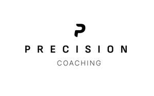
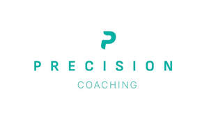

Trade Mark Journal No.2025/044 31 October 2025
UK00004279898 17 October 2025 (9,41,42,44)
Mark 1

Mark 2

- Class 9
- Application software and downloadable software in the fields of coaching, training, sports, nutrition, diet, fitness, health, wellness and wellbeing; Application software and downloadable software in respect of the provision of coaching services and training services, sports coaching and training services, personal coaching and training services, nutrition and diet coaching and training services, fitness coaching and training services, health, wellness and wellbeing coaching and training services; Application software and downloadable software in respect of the provision of personalised plans in the fields of coaching and training, nutrition and diet, fitness, health, wellness and wellbeing; Application software and downloadable software in respect of the provision of data tracking, data analytics, data synchronisation and data integration in the fields of coaching and training, nutrition and diet, fitness, health, wellness and wellbeing; Application software and downloadable software in respect of the provision of personalised, adaptive protocols generated from real-time data, genetic data and biometric data in the fields of coaching and training, nutrition and diet, fitness, health, wellness and wellbeing.
- Class 41
- Coaching services and training services; sports coaching and training services; personal coaching and training services; nutrition and diet coaching and training services; fitness coaching and training services; health, wellness and wellbeing coaching and training services; provision of personalised plans in respect of coaching, training, sports and fitness; provision of information, advice and consultancy in the fields of coaching, training, sports and fitness; provision of personalised, adaptive protocols generated from real-time data, genetic data and biometric data in the fields of coaching and training, sports and fitness; provision of education, courses, instruction, classes, seminars and assessment services in respect of all the aforementioned services; information and advice in respect of the aforementioned. .
- Class 42
- Software as a Service (SaaS); Providing online non-downloadable computer software; Software as a Service (SaaS) in the fields of coaching, training, sports, nutrition, diet, fitness, health, wellness and wellbeing; Software as a Service (SaaS) featuring software for the provision of coaching services and training services, sports coaching and training services, personal coaching and training services, nutrition and diet coaching and training services, fitness coaching and training services, health, wellness and wellbeing coaching and training services; Software as a Service (SaaS) featuring software for the provision of personalised plans in the fields of coaching and training, nutrition and diet, fitness, health, wellness and wellbeing; Software as a Service featuring software for the provision of data tracking, data analytics, data synchronisation and data integration in the fields of coaching and training, nutrition and diet, fitness, health, wellness and wellbeing; Software as a Service (SaaS) featuring software for the provision of personalised, adaptive protocols generated from real-time data, genetic data and biometric data in the fields of coaching and training, nutrition and diet, fitness, health, wellness and wellbeing; information and advice in respect of the aforementioned.
- Class 44
- Health, wellness and wellbeing monitoring, testing, evaluation and assessment services; Fitness monitoring, testing, evaluation and assessment services; provision of information, advice and consultancy in the fields of nutrition, diet, fitness, health, wellness and wellbeing; provision of personalised plans in respect of nutrition, diet, fitness, health, wellness and wellbeing; provision of advice and consultancy in the fields of nutrition, diet, fitness, health, wellness and wellbeing; provision of personalised, adaptive protocols generated from real-time data, genetic data and biometric data in the fields of nutrition and diet, fitness, health, wellness and wellbeing; information and advice in respect of the aforementioned.
AI PRECISION LTD
Representative: Sonder & Clay